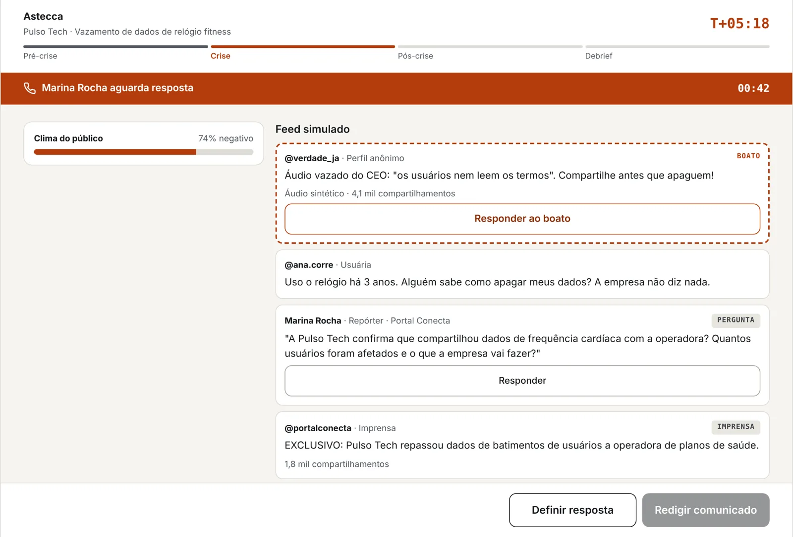
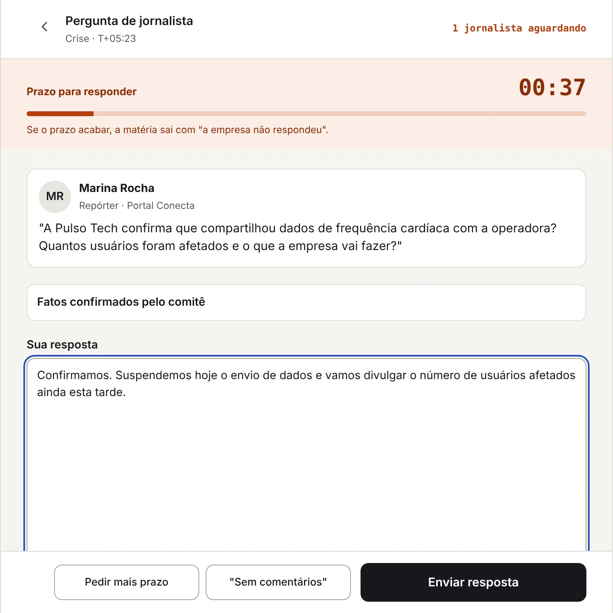
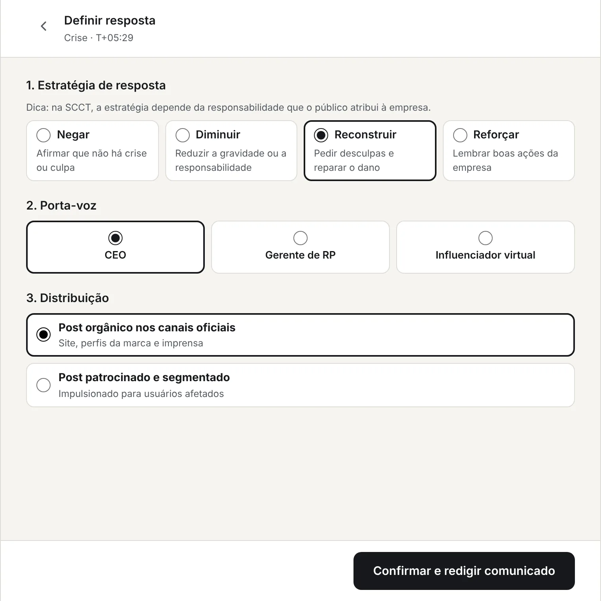
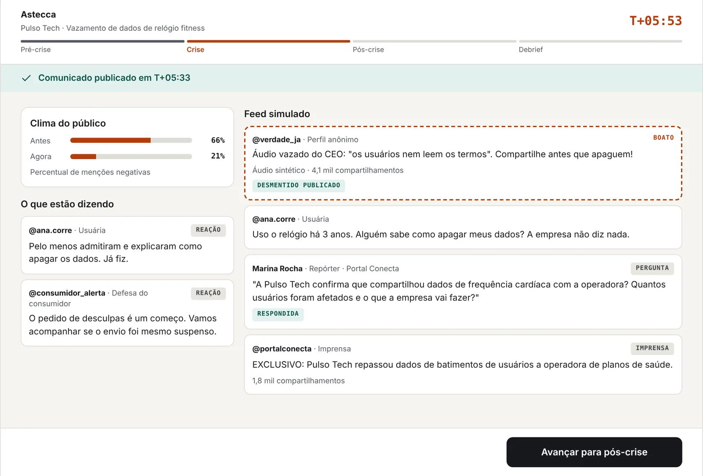
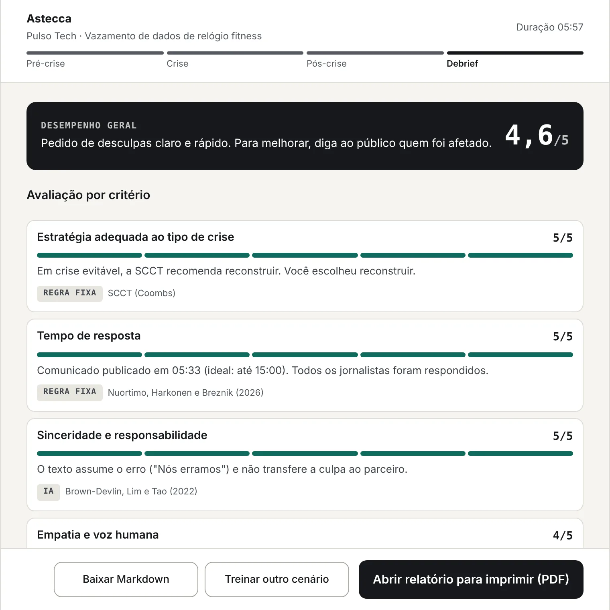
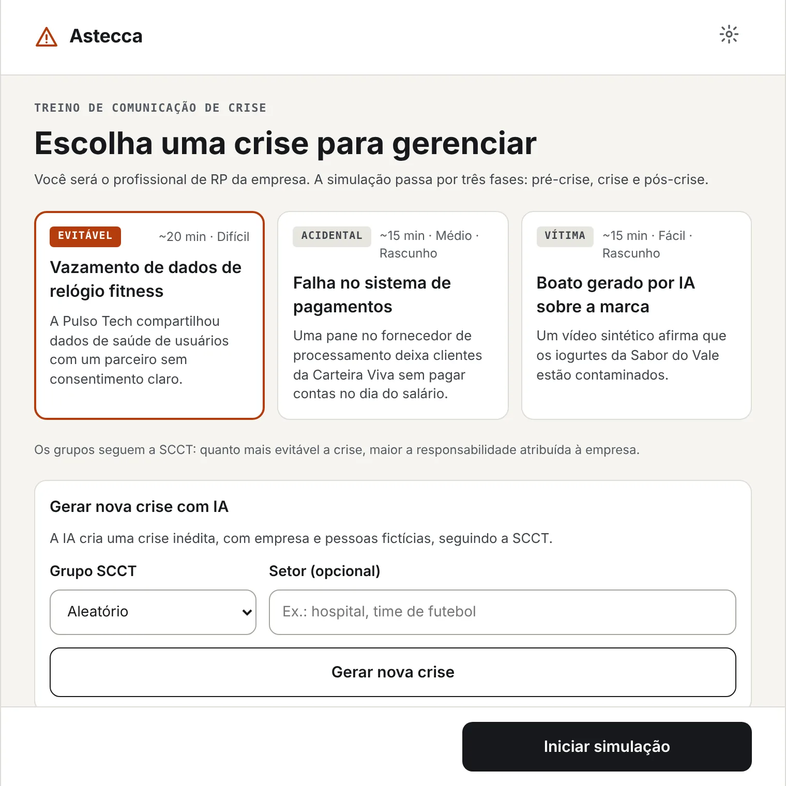

Ambiente de Treinamento em Comunicação de Crise
Treine a resposta a uma crise antes de enfrentar uma de verdade.
O Astecca é uma extensão gratuita do Chrome para estudantes de Relações Públicas. O aluno assume a comunicação de uma empresa em crise, responde a jornalistas sob pressão de tempo e desmente boatos gerados por IA. No fim, recebe uma avaliação fundamentada na teoria.
Gratuito · Chrome 116 ou mais recente · Chrome Web Store: em breve

Por que o Astecca
Nos cursos de Relações Públicas, a Comunicação de Crise costuma ser ensinada de forma teórica. Por exemplo, o aluno estuda modelos e casos, mas raramente vivencia a pressão do tempo e das decisões rápidas. Já no mercado, uma crise se espalha pelas redes em minutos e ainda pode ser distorcida por desinformação gerada por IA. Dessa forma, muitos profissionais chegam ao primeiro emprego sabendo a teoria, mas sem prática para aplicá-la.
O Astecca preenche essa lacuna com simulações. Nelas, o aluno erra e aprende num ambiente seguro, com retorno imediato e fundamentado.
Como funciona
Cada simulação passa por três fases e termina com uma avaliação por critério.
-
1
Pré-crise
O aluno recebe o papel de profissional de RP e percebe os primeiros sinais do problema. Em seguida, decide se monitora, reúne o comitê ou se antecipa.
-
2
Crise
O relógio acelera. Chegam matérias, posts, boatos e perguntas de jornalistas com prazo. O aluno escolhe a estratégia, o porta-voz e a forma de distribuição, além de redigir o comunicado oficial.
-
3
Pós-crise
O aluno revê a linha do tempo das próprias decisões e reflete sobre o que faria diferente e como recuperar a reputação.
-
✓
Avaliação
Cada critério recebe nota de 1 a 5, com justificativa e a teoria que a sustenta. O relatório pode ser impresso ou salvo em PDF para o professor.




O que o aluno pratica
Escolher a estratégia certa
Negar, diminuir, reconstruir ou reforçar, conforme a responsabilidade que o público atribui à empresa.
Responder à imprensa sob pressão
Perguntas com contagem regressiva, pedido de mais prazo e a armadilha do "sem comentários".
Redigir o comunicado oficial
Com voz humana, assumindo a responsabilidade e dizendo ao público o que fazer.
Combater a desinformação
Boatos e áudios sintéticos gerados por IA, que pedem um desmentido rápido e com provas.
Escolher porta-voz e canal
CEO, gerente de RP ou influenciador virtual; post orgânico ou patrocinado e segmentado.
Refletir sobre o que fez
Linha do tempo das decisões e plano de recuperação para os 30 dias seguintes.
Base teórica
Cada critério da avaliação vem de uma teoria ou de um estudo. Por isso, o feedback explica o porquê de cada nota.
- SCCT — Teoria da Comunicação de Crise Situacional
- Define os grupos de crise (vítima, acidental e evitável) e a estratégia de resposta adequada a cada um.
- EPPM — Modelo do Processo Paralelo Estendido
- Avalia se a mensagem explica o risco e diz ao público o que fazer.
- Brown-Devlin, Lim e Tao (2022)
- Mensagens de crise patrocinadas ou segmentadas por dados perdem credibilidade, enquanto o pedido de desculpas a aumenta.
- Olbermann e Nagl (2025)
- A aceitação de um porta-voz depende da humanização mental, ou seja, de valores e empatia percebidos, mais do que da aparência.
- Nuortimo, Harkonen e Breznik (2026)
- A rapidez da resposta pesa muito no dano à reputação.
- Cheng et al. (2025)
- A IA deve apoiar a decisão humana. No Astecca, a nota final é sempre do professor.
- Karinshak e Jin
- A desinformação gerada por IA se espalha rápido e exige desmentidos com fontes verificáveis.
Inteligência artificial opcional
O Astecca funciona sem IA. Nesse modo, as reações do público vêm prontas de cada cenário, e os textos são avaliados por heurísticas simples.
Com uma chave de API do Claude, do GPT ou do Gemini, as reações e a avaliação dos textos ficam mais ricas. Além disso, o aluno pode gerar novas crises, escolhendo o grupo da SCCT e o setor da empresa.
A IA escreve o conteúdo, enquanto as regras teóricas de cada crise são definidas pelo código. Dessa forma, a avaliação continua coerente com a SCCT.

Baixar e instalar
Cada pessoa baixa o Astecca e o instala no próprio Chrome. A instalação leva cerca de dois minutos.
Chrome Web Store
Instalação com um clique e atualização automática.
Em breve- Baixe o arquivo ZIP pelo botão acima e descompacte. Ele cria a pasta
astecca-main. - No Chrome, abra o endereço
chrome://extensions. - Ative o Modo do desenvolvedor, no canto superior direito.
- Clique em Carregar sem compactação e selecione a pasta
astecca-main. A pasta certa é a que contém o arquivomanifest.json. - Fixe o ícone do Astecca na barra do Chrome e clique nele. O Astecca abre numa aba inteira.
Importante: não apague nem mova a pasta depois de instalar, já que o Chrome carrega o Astecca a partir dela. Para atualizar, baixe o ZIP de novo, substitua a pasta e clique no botão de recarregar do Astecca em chrome://extensions.
Privacidade e segurança
- Os dados do aluno ficam apenas no navegador. Não há servidor do projeto.
- Sem IA, nada sai do computador. Com IA, só os textos da simulação vão ao provedor escolhido, sem o nome do aluno.
- Os textos são protegidos contra tentativas de manipular a IA avaliadora, e o relatório sinaliza esses casos ao professor.
- A nota final é sempre do professor. O Astecca mostra a origem de cada nota.
Sobre
O Astecca foi desenvolvido como produto do Trabalho de Conclusão de Curso de Ana Caroliny Mendes Cavalcante, graduanda em Relações Públicas na Universidade Federal de Alagoas (UFAL), sob orientação do Prof. Dr. André Lage Freitas.
O projeto está em fase de MVP. Por isso, sugestões de professores e estudantes são bem-vindas pelo GitHub.